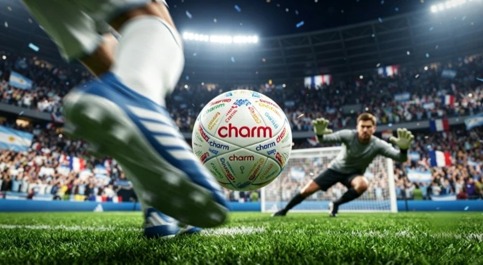

EDITORIAL DIGEST · 本站原创归纳
这篇文章在讨论什么
以规则场景、国家队权益和连续内容为线索，说明体育赞助的价值不只在签约，而在于能否持续转成用户看得见、记得住的内容资产。 本站把原文中对当前研究最有用的部分组织成下方营销启发卡；它们是编辑归纳，不是原文逐字转载。
MARKETING KNOWLEDGE ROUTER · 营销知识路由器
营销启发卡
将文章最有价值的判断拆成营销启发卡；卡片会继续连接案例、数据、方法与其他深度文章。 卡片底部按主题连接全站相关案例、经典方法与深度文章。
01文章核心判断
2026 世界杯把内容节点扩展到 104 场
48 支球队、104 场比赛和超过一个月赛程，意味着品牌不是购买一次曝光，而是购买大量可预案、可响应、可连续讲述的时间节点。
02文章核心判断
规则时刻的价值在“必然重复”
文章以补水暂停为例，说明固定规则镜头比偶发热点更容易预先设计品类语言、素材版本和媒介联动。但具体执行次数与时点仍须以当届竞赛规则核验。
03文章核心判断
蒙牛用多资源形成内容矩阵
央视、咪咕、直播黄金点、《豪门盛宴》栏目、“要强时刻”和“超级绿茵场”共同出现，使赞助身份在不同观看路径中反复被识别。
04文章核心判断
蒙牛 × 海信把两份资源变成共同事件
两家品牌不再各自使用围挡，而是用互相接话的创意制造可拍摄、可转发的话题。资源整合的增量来自共同叙事，而非简单叠加 Logo。
05文章核心判断
东鹏把姆巴佩的速度资产接到补水
球星负责功能信任和注意力，补水场景负责品类关联，央视与咪咕负责覆盖。好的球星合作需要回答“他为什么能证明产品”。
06文章核心判断
神州租车搭建前中后链路
阿根廷、荷兰国家队权益负责前端身份，内容与赛果运营负责中段参与，咪咕媒体和租车业务负责后端承接。权益不是终点，而是用户路径的起点。
07文章核心判断
品牌需要五种执行能力
文章归纳赛事洞察、资源整合、品牌匹配、媒体执行与整合传播。缺少任意一项，赞助都可能退化成昂贵的签约新闻。
08文章核心判断
从赛前到赛后建立同一张节点表
每个动作应标注触发条件、素材负责人、发布渠道、商业出口和证据指标。这样才能把规则、国家队和平台资源转换成可复盘资产。
数据口径：本文带有企业/服务商案例复盘属性。“补水暂停”时点与次数、品牌曝光和转化效果需回到 FIFA 当届规则、合同、转播记录及品牌后台核验，不应把叙述性案例当独立审计结果。
如何用到项目中
可迁移方法
优先寻找赛事中必然反复出现的规则镜头，再设计品牌语言、内容版本和转化出口。
证据与使用边界
规则点位可见不代表被观众正确归因；需补露出场次、注意度、品牌联想和业务指标。
研究索引
版权说明：原文著作权归作者与 广告门 所有。本页是案例库的原创摘要、方法归纳与证据提醒，不替代原文；引用、数据和完整论证请回到原始发布页阅读。